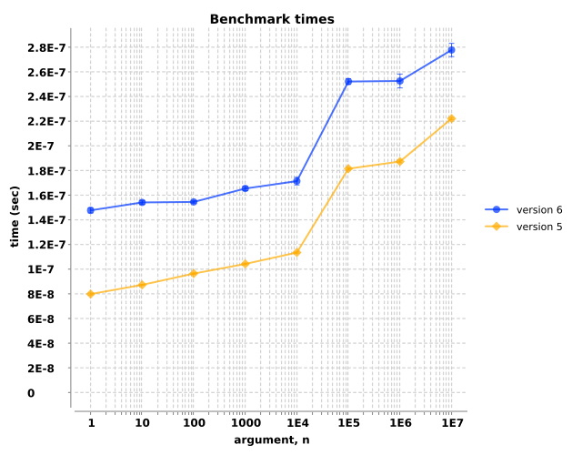
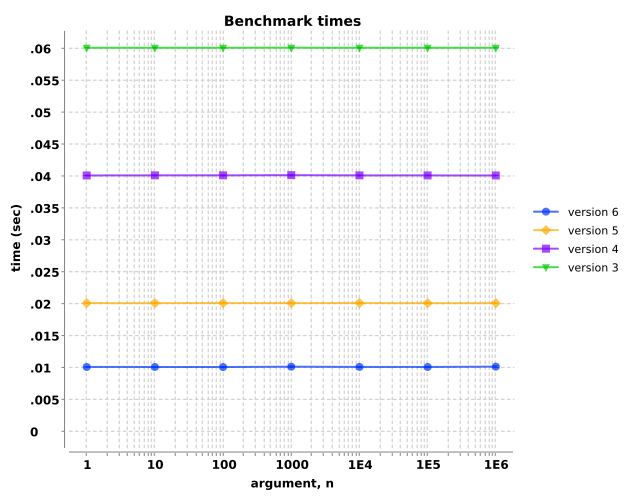

custom `conj`
Version 6 implemented `conj` with transients, so should be faster...
(fn [n] (my-conj (seq-of-n-rand-ints n) :tail-value))
| arg, n | ||||||||
|---|---|---|---|---|---|---|---|---|
| version | 1 | 10 | 100 | 1000 | 10000 | 100000 | 1000000 | 10000000 |
| 6 | 3.3e-07±1.3e-08 | 3.8e-07±4.7e-09 | 4.5e-07±8.3e-09 | 5.2e-07±2.5e-08 | 5.7e-07±7.5e-09 | 9.2e-07±1.4e-08 | 9.6e-07±1.4e-08 | 1.1e-06±2.9e-08 |
| 5 | 8.1e-08±1.7e-09 | 1.4e-07±2.3e-09 | 1.8e-07±1.8e-09 | 2.4e-07±4.7e-09 | 3.0e-07±4.5e-09 | 7.0e-07±6.9e-09 | 7.6e-07±1.3e-08 | 9.2e-07±1.9e-08 |
mapping stuff
Note: Skipped version 5...
(fn [n] (map inc (range-of-length-n n)))
![Benchmark measurements for expression `(fn [n] (map inc (range-of-length-n n)))`, time versus 'n' arguments, comparing different versions.](img/group-1-fexpr-0.svg)
| arg, n | ||||||
|---|---|---|---|---|---|---|
| version | 1 | 10 | 100 | 1000 | 10000 | 100000 |
| 6 | 4.0e-08±1.2e-09 | 9.5e-08±2.3e-09 | 1.4e-07±1.9e-09 | 1.9e-07±2.6e-09 | 2.5e-07±1.7e-09 | 2.9e-07±7.7e-10 |
| 4 | 4.2e-08±1.7e-09 | 9.1e-08±1.3e-09 | 1.4e-07±2.5e-09 | 2.0e-07±1.1e-09 | 2.5e-07±2.2e-09 | 3.0e-07±1.6e-09 |
(fn [n] (map str/upper-case (abc-cycle-of-length-n n)))
![Benchmark measurements for expression `(fn [n] (map str/upper-case (abc-cycle-of-length-n n)))`, time versus 'n' arguments, comparing different versions.](img/group-1-fexpr-1.svg)
| arg, n | ||||||
|---|---|---|---|---|---|---|
| version | 1 | 10 | 100 | 1000 | 10000 | 100000 |
| 6 | 4.4e-08±2.1e-09 | 9.1e-08±1.1e-09 | 1.5e-07±1.7e-09 | 1.9e-07±3.9e-09 | 2.5e-07±2.1e-09 | 3.0e-07±4.0e-09 |
| 4 | 4.0e-08±1.1e-09 | 9.5e-08±2.4e-09 | 1.5e-07±2.3e-09 | 1.9e-07±5.4e-10 | 2.6e-07±9.1e-10 | 2.9e-07±7.4e-10 |
plus, vary number of digits in args
Plus vary args comments...
(fn [n] (delayed-+ n n n))
| arg, n | |||||||
|---|---|---|---|---|---|---|---|
| version | 1 | 10 | 100 | 1000 | 10000 | 100000 | 1000000 |
| 6 | 2.0e-02±8.6e-06 | 2.0e-02±1.2e-05 | 2.0e-02±8.0e-06 | 2.0e-02±8.3e-06 | 2.0e-02±1.2e-05 | 2.0e-02±1.3e-05 | 2.0e-02±1.4e-05 |
| 5 | 4.0e-02±1.6e-05 | 4.0e-02±1.1e-05 | 4.0e-02±8.1e-06 | 4.0e-02±1.3e-05 | 4.0e-02±6.2e-06 | 4.0e-02±1.0e-05 | 4.0e-02±1.2e-05 |
| 4 | 6.0e-02±2.1e-05 | 6.0e-02±2.7e-05 | 6.0e-02±7.7e-06 | 6.0e-02±1.3e-05 | 6.0e-02±8.8e-06 | 6.0e-02±1.0e-05 | 6.0e-02±1.1e-05 |
| 3 | 8.0e-02±1.2e-05 | 8.0e-02±2.4e-05 | 8.0e-02±1.5e-05 | 8.0e-02±5.5e-06 | 8.0e-02±9.0e-06 | 8.0e-02±1.3e-05 | 8.0e-02±1.9e-05 |
(fn [n] (delayed-+ n n))
![Benchmark measurements for expression `(fn [n] (delayed-+ n n))`, time versus 'n' arguments, comparing different versions.](img/group-2-fexpr-1.svg)
| arg, n | |||||||
|---|---|---|---|---|---|---|---|
| version | 1 | 10 | 100 | 1000 | 10000 | 100000 | 1000000 |
| 6 | 2.0e-02±1.0e-05 | 2.0e-02±1.2e-05 | 2.0e-02±1.9e-05 | 2.0e-02±1.4e-05 | 2.0e-02±1.0e-05 | 2.0e-02±8.9e-06 | 2.0e-02±2.6e-06 |
| 5 | 4.0e-02±7.3e-06 | 4.0e-02±1.0e-05 | 4.0e-02±1.8e-05 | 4.0e-02±9.8e-06 | 4.0e-02±8.3e-06 | 4.0e-02±8.5e-06 | 4.0e-02±7.1e-06 |
| 4 | 6.0e-02±7.2e-06 | 6.0e-02±6.9e-06 | 6.0e-02±8.6e-06 | 6.0e-02±1.1e-05 | 6.0e-02±2.0e-05 | 6.0e-02±8.0e-06 | 6.0e-02±1.7e-05 |
| 3 | 8.0e-02±1.4e-05 | 8.0e-02±1.2e-05 | 8.0e-02±1.6e-05 | 8.0e-02±1.5e-05 | 8.0e-02±1.1e-05 | 8.0e-02±1.2e-05 | 8.0e-02±1.2e-05 |
(fn [n] (delayed-+ n))
![Benchmark measurements for expression `(fn [n] (delayed-+ n))`, time versus 'n' arguments, comparing different versions.](img/group-2-fexpr-2.svg)
| arg, n | |||||||
|---|---|---|---|---|---|---|---|
| version | 1 | 10 | 100 | 1000 | 10000 | 100000 | 1000000 |
| 6 | 2.0e-02±1.3e-05 | 2.0e-02±8.3e-06 | 2.0e-02±6.9e-06 | 2.0e-02±1.0e-05 | 2.0e-02±1.1e-05 | 2.0e-02±1.8e-05 | 2.0e-02±1.2e-05 |
| 5 | 4.0e-02±7.3e-06 | 4.0e-02±6.1e-06 | 4.0e-02±7.7e-06 | 4.0e-02±6.8e-06 | 4.0e-02±7.9e-06 | 4.0e-02±1.4e-05 | 4.0e-02±1.0e-05 |
| 4 | 6.0e-02±1.1e-05 | 6.0e-02±6.8e-06 | 6.0e-02±1.2e-05 | 6.0e-02±1.1e-05 | 6.0e-02±1.1e-05 | 6.0e-02±1.7e-05 | 6.0e-02±2.3e-05 |
| 3 | 8.0e-02±1.2e-05 | 8.0e-02±1.4e-05 | 8.0e-02±2.0e-05 | 8.0e-02±2.1e-05 | 8.0e-02±3.4e-06 | 8.0e-02±1.1e-05 | 8.0e-02±1.1e-05 |
plus, vary number of operands
Note: Added this test starting with version 4
(fn [n] (apply + (seq-of-n-repeats n)))
![Benchmark measurements for expression `(fn [n] (apply + (seq-of-n-repeats n)))`, time versus 'n' arguments, comparing different versions.](img/group-3-fexpr-0.svg)
| arg, n | ||||||
|---|---|---|---|---|---|---|
| version | 1 | 10 | 100 | 1000 | 10000 | 100000 |
| 6 | 1.1e-07±9.4e-10 | 1.1e-06±3.1e-09 | 9.8e-06±3.4e-08 | 9.7e-05±6.2e-07 | 9.7e-04±9.5e-06 | 9.7e-03±1.1e-04 |
| 5 | 1.1e-07±8.3e-10 | 1.1e-06±4.2e-09 | 9.8e-06±1.8e-08 | 9.6e-05±3.3e-07 | 9.7e-04±1.3e-05 | 9.6e-03±4.7e-05 |
| 4 | 1.1e-07±6.9e-10 | 1.1e-06±2.5e-09 | 9.7e-06±3.3e-08 | 9.6e-05±3.0e-07 | 9.6e-04±4.1e-06 | 9.6e-03±4.7e-05 |